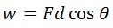
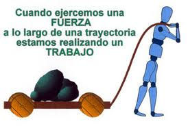
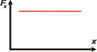
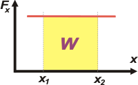
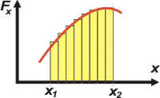
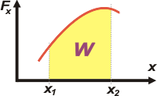

TRABAJO
Introducción
El trabajo es efectuado por una fuerza que actúa sobre un objeto cuando el punto de aplicación de esta fuerza se mueve alguna distancia y la fuerza tiene una componente a lo largo de la línea de movimiento.
El trabajo W efectuado sobre un objeto por una agente que ejerce una fuerza constante es el producto de la componente de la fuerza en la dirección del desplazamiento y la magnitud del desplazamiento de la fuerza.

Energía
Es una propiedad o atributo de todo cuerpo o sistema material en virtud de la cual éstos pueden transformarse modificando su situación o estado, así como actuar sobre otros originando en ellos procesos de transformación. Sin energía, ningún proceso físico, químico o biológico sería posible. Dicho en otros términos, todos los cambios materiales están asociados con una cierta cantidad de energía que se pone en juego, se cede o se recibe.
Conceptualmente, energía es la capacidad para realizar un trabajo o para transferir calor; la energía a su vez se presenta como energía calórica, energía mecánica, energía química, energía eléctrica y energía radiante; estos tipos de energía pueden ser además potencial o cinética La energía potencial es la que posee una sustancia debido a su posición espacial o composición química y la energía cinética es la que posee una sustancia debido a su movimiento.
Fuerza y Movimiento
 | El movimiento tiene que ver con la sensación de desplazamiento rápido, como ver una moto o un auto a gran velocidad, pero es provocado por un efecto invisible, que actúa sobre los cuerpos, llamado fuerza.
Fuerza y movimiento son dos eventos físicos que están ligados. Pero, aunque la fuerza puede manifestarse sola, el movimiento no es posible sin el concurso de una fuerza.
Como la fuerza es invisible, alguno de los efectos producidos por esta, también son invisibles.
|
Todas las fuerzas se representan mediante flechas llamadas vectores. El largo de la flecha representa la magnitud de la fuerza, es decir, su intensidad; la inclinación muestra la dirección en la que actúa la fuerza, y la punta de la flecha indica el sentido en que la fuerza actúa.
Cuando representamos una fuerza, el vector (flecha) debe dibujarse desde el cuerpo que la recibe (receptor) y en la dirección y sentido que es aplicada.
Trabajo de una fuerza
 | En mecánica clásica, el trabajo que realiza una fuerza sobre un cuerpo equivale a la energía necesaria para desplazar este cuerpo. El trabajo es una magnitud física escalar que se representa con la letra (del inglés Work) y se expresa en unidades de energía, esto es en julios o joules (J) en el Sistema Internacional de Unidades.
Ya que por definición el trabajo es un tránsito de energía, nunca se refiere a él como incremento de trabajo, ni se simboliza como ΔW. |
Joule es el trabajo realizado por una fuerza de 1 N en un desplazamiento de 1 m, y su nombre fue elegido en honor del físico inglés James Prescott Joule (1818-1889), que estudió la naturaleza del calor y descubrió su relación con el trabajo.
La razón de especificar la trayectoria a lo largo de la cual se calcula el trabajo es que, en general, el trabajo de una fuerza es distinto dependiendo de la trayectoria que describe la partícula cuando se desplaza desde su posición inicial A hasta la posición final B.
 | Matemáticamente se expresa como:
Donde es el módulo de la fuerza, es el desplazamiento y es el ángulo que forman entre sí el vector fuerza y el vector desplazamiento (véase dibujo).
Cuando el vector fuerza es perpendicular al vector desplazamiento del cuerpo sobre el que se aplica, dicha fuerza no realiza trabajo alguno. Asimismo, si no hay desplazamiento, el trabajo también será nulo. |
 | Si la fuerza y el desplazamiento tienen el mismo sentido, el trabajo es positivo
Si la fuerza y el desplazamiento tienen sentidos contrarios, el trabajo es negativo
Si la fuerza es perpendicular al desplazamiento, el trabajo es nulo. |
Trabajo de una fuerza variable
Voy a presentar un modo de calcular el trabajo de fuerzas variables (como la fuerza elástica). Empecemos por presentar un tipo de gráfico bastante útil: nos muestra el valor de una fuerza, Fx, cualquiera en función de la posición -cambiante-, x, que ocupa un cuerpo.

Se trata de un gráfico, como se ve, de fuerza en función de la posición. En este caso en particular se trata de una fuerza constante, tiene siempre el mismo valor, y el subíndice x indica que la fuerza tiene la misma dirección que la posición (y del desplazamiento).
Tomemos dos posiciones cualesquiera y llamémoslas x1 y x2. Y calculemos el "área encerrada baja la curva" entre ese par de posiciones.
Acá tenés el área que vamos a calcular. Como se trata de un rectángulo es sencillo: lado por lado, base por altura. La base es igual a x2 — x1, y la altura es F.

Ese producto no es otra cosa que el trabajo de la fuerzaFx en el desplazamiento (x2 — x1).
WF = Fx . (x2 — x1) = Fx . Δx
De modo que el área encerrada bajo la curva de este gráfico es igual al trabajo de la fuerza. No se trata, claro, de un área geométrica. Es un área que representa una magnitud física, en este caso un trabajo.
No se mide en unidades de superficie (m², cm², o cualquier otra). Se mide en unidades de trabajo, por ejemplo el joule, J.

Aceptado esto, podemos preguntarnos si con las fuerzas variables (o sea, que cambia de valor en cada posición) pasa algo equivalente. La manera de obrar es la siguiente: fraccionemos el desplazamiento en pequeños segmentos.
El trabajo de la fuerza variable en el desplazamiento (x2 — x1) se aproxima mucho a la suma de los trabajos parciales representado por cada uno de los rectangulitos.
Pero esa aproximación se puede aumentar tanto como uno quiera haciendo cada vez más pequeños los segmentos de desplazamiento que después tendremos que sumar.

El análisis matemático permite hacer esas sumas de segmentos tan finitos que son invisibles. La notación es ésta:
W = ∫ Fx dx
Que se lee así: el trabajo es igual a la suma integral de todos los productos entre el valor de la fuerza y el pequeño segmento de desplazamiento durante el que actúa la fuerza.
O un poco más crípticamente: el trabajo es igual a la integral de la fuerza por el diferencial del desplazamiento.
En los cursos iniciales de Física no se suele apelar a las habilidades ni a los conocimientos de análisis matemático de los estudiantes, y No me salen no lo hace. Pero sí a las habilidades geométricas, que son mucho más básicas. Ya que el cálculo de integrales es equivalente al cálculo de áreas. Por lo tanto tené presente esta conclusión que nos va a ser útil en la resolución de muchos ejercicios:
Las áreas emplazadas sobre el eje de las posiciones representan trabajos positivos y se hallan debajo del eje de posiciones, trabajos negativos.